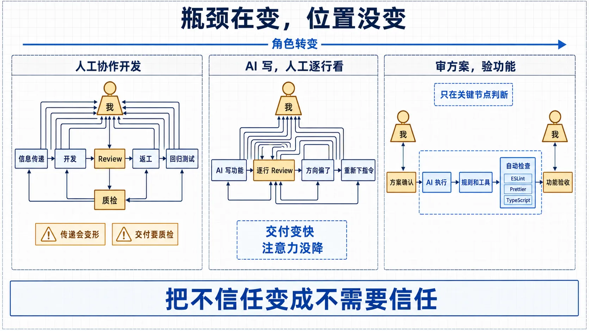
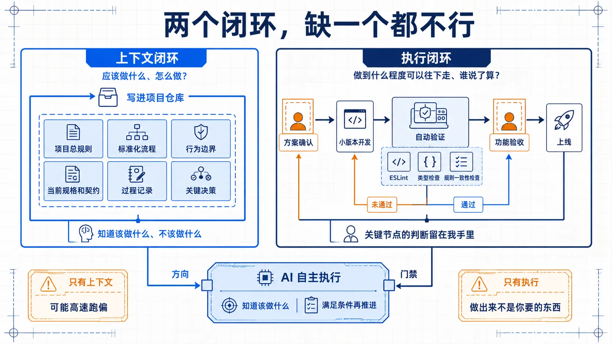
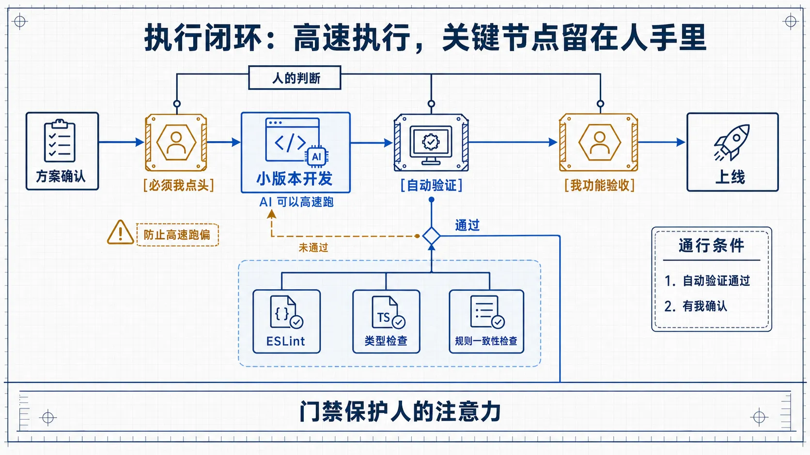
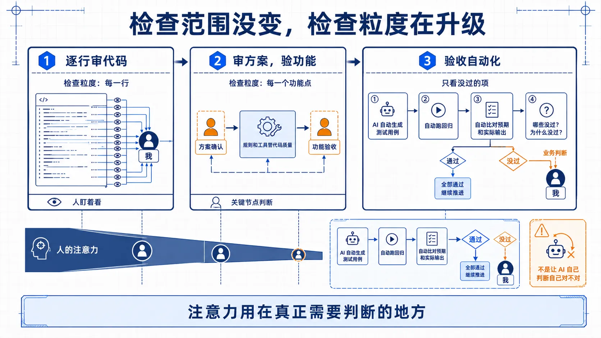

从逐行 Review 到审方案、验功能
用规则、工具和关键门禁，把人的注意力留给真正需要判断的地方
对内平台 + 对外平台
生产与管理业务
移动端业务交付
持续插入的功能线
传递一次，理解就可能变形一次
交付一次，就要重新质检一次
AI 能独立写完模块，也能保持输出风格一致；但我仍然要逐行看、提前判断逻辑节点、在方向偏离时重新下指令。
从 Review 别人的代码
变成 Review AI 的代码


如果信息只在脑子里，每次都要重讲；漏一处，方向就可能从开头偏离。
知道该做什么、不该做什么，也知道做到什么程度才算完成。

只给新同事看文档，他能否说清：在做什么、流程是什么、怎样算做对？
对不确定性强、出错代价高的节点，明确谁确认、用什么证据才能推进。
报告、数据、截图都可以；关键是换个人来看，也能独立判断对错。
